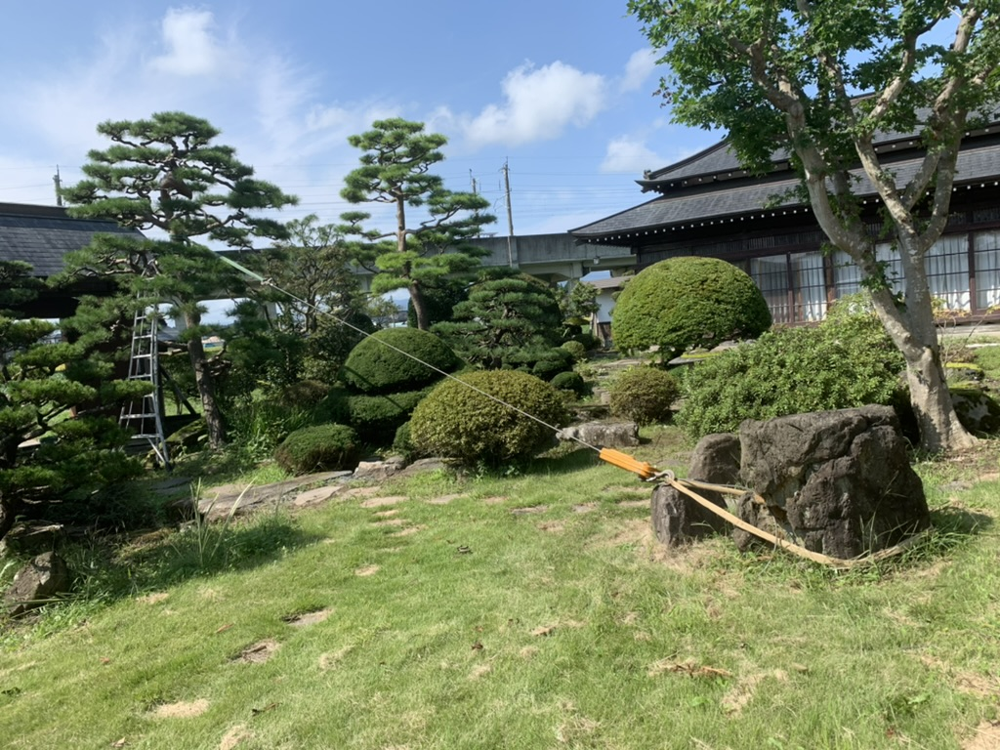
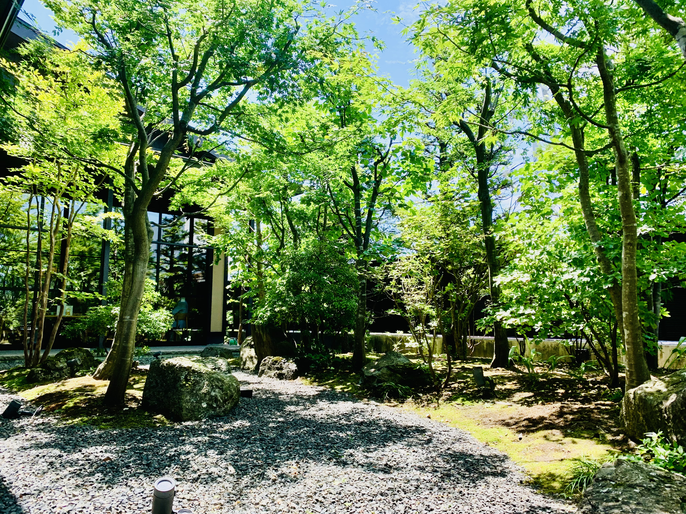

こんなお困りごとはありませんか？
庭のこと、
どうしよう。
- 庭木が伸びすぎてしまった
- 松の手入れをしてほしい
- 毎年、庭の管理をお願いしたい
- 自分で庭の手入れをするのが難しくなった
- 以前頼んでいた植木屋さんができなくなった
- 庭の手入れを、どこに頼めばいいかわからない
庭藤について
奥州市で、
40年以上。
庭藤は、庭木の剪定を中心に、 個人のお客様のお庭をお手入れしています。
庭藤の仕事
早く、きれいに。
庭藤が大切にしているのは、 「スピード」と「質」。
松の剪定
長年の経験を活かし、 松の樹形を見ながら、 必要な枝を判断して剪定します。
庭木の剪定
庭全体のバランスを見ながら、 一本一本の木を整えていきます。
年間管理
一度きりではなく、 毎年のお庭のお手入れも承っています。
長く続いてきた理由
造園の仕事
現在の年間管理
これまでに関わった個人宅の目安
※個人宅数はこれまでの経験をもとにした概算です。
お客様からいただいた言葉
庭が変わると、
気持ちも少し変わる。
「気持ちいい。心が晴れた。」
「綺麗になった。」
「これでお盆が越せる。」
「来年もよろしくお願いします。」
庭藤の主人
「お客さんが待ってるうちは、
面倒をみたい。」
弘前大学農学部を卒業後、 東京・京都で造園の修行。
その後、地元岩手で独立し、 一軒一軒のお庭を訪ねてきました。
開業当初からのお客様との付き合いも、 今も続いています。
施工事例
庭の変化

庭木の剪定
松の剪定

年間管理
よくあるご質問
FAQ
見積もりは無料ですか？
はい。まずはお電話でご相談ください。 お庭の状態を確認したうえでお見積もりします。
個人の家でもお願いできますか？
はい。個人のお庭を中心に承っています。
毎年お願いすることはできますか？
はい。年間を通したお庭の管理も承っています。